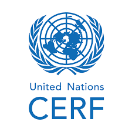
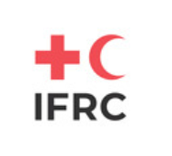

Organizaciones que brindan ayuda y aceptan donaciones
Estas organizaciones trabajan a nivel nacional e internacional para brindar ayuda humanitaria en situaciones de emergencia.
Puedes acceder a su sitio web oficial haciendo clic en el botón de cada organización.

Cruz Roja
La Cruz Roja Panameña es una organización humanitaria sin fines de lucro, fundada en 1917 y miembro del Movimiento Internacional de la Cruz Roja y de la Media Luna Roja. Su misión es brindar ayuda imparcial a las personas afectadas por desastres, emergencias y situaciones de vulnerabilidad, sin importar su origen, religión o condición. Además de responder a emergencias, desarrolla programas de primeros auxilios, gestión del riesgo de desastres, donación voluntaria de sangre, apoyo a migrantes y capacitación comunitaria, contribuyendo al bienestar y la protección de la población panameña.
Visitar sitio web
Médicos Sin Fronteras
Médecins Sans Frontières es una organización humanitaria internacional que brinda atención médica de emergencia a personas afectadas por conflictos armados, epidemias, desastres naturales, desnutrición y otras crisis humanitarias. Sus equipos trabajan en decenas de países ofreciendo asistencia médica, medicamentos y ayuda vital a quienes más lo necesitan, sin importar su nacionalidad, religión o condición. Además, la organización impulsa donaciones que permiten responder rápidamente a emergencias y salvar vidas en todo el mundo.
Visitar sitio web
UNICEF
United Nations Children's Fund es la agencia de las Naciones Unidas dedicada a proteger los derechos y el bienestar de los niños y adolescentes. Trabaja en más de 190 países y territorios, colaborando con gobiernos y organizaciones para brindar educación, salud, nutrición, agua potable y protección infantil, además de responder a emergencias y desastres humanitarios. También impulsa la participación de la sociedad mediante programas de voluntariado, campañas de recaudación de fondos y acciones comunitarias que apoyan a la infancia más vulnerable en todo el mundo.
Visitar sitio web
Fondos Humanitarios de las Naciones Unidas
United Nations Office for the Coordination of Humanitarian Affairs administra los Fondos Humanitarios de las Naciones Unidas, mecanismos de financiación que apoyan la respuesta a crisis y desastres en todo el mundo. Estos fondos proporcionan recursos a organizaciones humanitarias para brindar alimentos, agua potable, refugio, atención médica, educación y otros servicios esenciales a las personas afectadas. Además, ayudan a cubrir necesidades urgentes cuando la financiación es insuficiente y permiten ampliar la asistencia a comunidades de difícil acceso. Las donaciones se destinan directamente a organizaciones que trabajan en la primera línea de las emergencias, contribuyendo a salvar vidas y proteger a las poblaciones más vulnerables.
Visitar sitio web
Federación Internacional de Sociedades de la Medialuna Roja(IFRC)
la Medialuna Roja (IFRC) es la red humanitaria más grande del mundo. Reúne a 191 Sociedades Nacionales de la Cruz Roja y de la Medialuna Roja que trabajan en más de 190 países y territorios. Su función es coordinar la asistencia humanitaria durante desastres y crisis, fortalecer la preparación de las comunidades y apoyar a las sociedades nacionales para proteger la vida, la salud y la dignidad de las personas más vulnerables.
Visitar sitio webOrganización Internacional para las Migraciones (OIM)
Organización internacional dedicada a promover una migración segura, ordenada y digna, así como a proteger los derechos de las personas migrantes y desplazadas. Trabaja junto con gobiernos y organizaciones humanitarias en más de 170 países, brindando asistencia durante emergencias, conflictos y desastres. Además de proporcionar apoyo humanitario, refugio y protección, desarrolla programas para prevenir la violencia, fortalecer la recuperación de las comunidades y garantizar que las personas más vulnerables reciban atención y acceso a sus derechos fundamentales.
Visitar sitio web